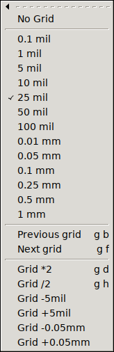

The same default menu file is used in all GUI HIDs. It comes with multi-stroke key bindings, plus only a very few, alternative keys that use modifiers (mostly ctrl). A multi-stroke key binding requires the user to type in a sequence of keys, e.g. pressing 't' and 'l' (written as {t l} in this document) will make pcb-rnd switch to the line tool. There are two major advantages of using multi-stroke instead of modifiers:
Most multi-stroke keys, especially the commonly used ones, use two strokes. Some rarely used feature will require three. The system can be regarded as a tree: e.g. in a 3-key sequence, starting from the root (nothing is pressed) the first key select a chapter, the second key narrows it down to a subchapter and the third key (leaf) selects the actual action within the subchapter. The current key tree is accessible in a large svg drawing or in a script-digestible flat list.
The grid is an imaginary set of points over the drawing. The crosshair can snap to the grid, helping the user to keep coordinates of objects distributed evenly.
The only grid geometry pcb-rnd supports is a regular, rectangular grid, that is: grid points spaced evenly in x and y directions, aligned into horizontal and vertical rows. The grid also has an optional offset in x and y directions (which is usually set to 0;0).
The grid spacing (distance between grid points) is user configurable. There are two methods managing the grid.
The configuration system has a node called editor/grids, which is an ordered list of preset grid settings. This list should contain the grid settings preferred by the user, or preferred for the given design. Since this is a configuration item, the usual conf rules apply (e.g. local grid config can be saved in the project's config or even in the board file).
While drawing, the user can use the {g b} and {g f} hotkeys, or the shorter [ and ] keys to step the current grid, selecting the previous or next item from the list. The grid sizes menu will always have the currently selected item checked.

If the user changes grid properties directly, the new grid setup will most likely not match any of the presets and the check mark is gone from the menu. However, pcb-rnd remember the last used preset menu and upon the next stepping it will move from the last selected preset grid.
The format for the grid configuration is a simple text that lists an optional grid name, the mandatory grid size, the optional offset and optionally instructs pcb-rnd to also switch units when the grid is activated. The full syntax, optional parts written in [] is:
[name:]size[@offs][!unit]
(The optional name has no functionality other than being displayed, helping the user to remember the purpose of the grid.)
Examples:
| grid spec | description |
|---|---|
10 mil | anonymous 10 mil grid with no offset |
1.5 mm | anonymous 1.5 mm grid with no offset |
20 mil@1mil;-3mil | 20 mil grid with a horizontal offset of +1 mil and vertical offset of -3 mil |
1.5 mm!mm | 1.5 mm grid; when activated, switch untis to mm |
placing dips:100 mil | named grid |
leds:1mm@0.5mm;-0.1mm!mm | all the above features, combined |
The current grid is stored as grid distance and x;y offset. Regardless of the configured presets, these properties of the current grid can be changed any time, using the SetValue() action or using the menu.
The menu system is loaded and merged from multiple menu files and is dynamic (can be changed while pcb-rnd is running). There is a base menu file (file name is partially configured by conf node rc/menu_file), typically /usr/share/pcb-menu-default.lht. This is file is loaded first, with priority 0. Then pcb-rnd loads further menu files and menu file patches, for feature plugins, scripts or user addons at higher priority.
All menu files and menu patches are kept in memory. Upon loading, unloading or modifying any of these in-memory menu images, pcb-rnd will merge them into the final menu tree, which is what the GUI menu layout is modified to.
The following menu file/patch sources are supported:
| source | usual prio | description |
|---|---|---|
| base | 0 | factory menu file, normally /usr/share/pcb-menu-default.lht |
| plugins (static) | 100..199 | menu files embedded in feature plugins (e.g. to create import menus per format) |
| user | 300..400 | menu files/patches loaded upon user request (conf node: rc/menu_patches) |
| action (scripts) | 500 | using the CreateMenu() action |
| plugins (dynamic) | 500 | e.g. route style or layer menus that are generated from board data |
Menu files describe the menu tree, or a part of the menu tree, in its final form. The base of the menu system, at priority 0, must be a menu file. When a menu file is used to patch an existing in-memory menu image (at priority higher than 0), it can overwrite existing parts of the image or it can append to existing menus and submenus. But it can not remove submenus or modify existing submenus without fully overwriting them. The root node of a menu file is ha:rnd-menu-v1.
A menu patch file contains an ordered list of instructions on how to make modifications to the current in-memory menu image. The menu patch file is a lihata document as follows:
ha:rnd-menu-patch-v1 {
prio=456
li:patch {
...instructions (see below)...
}
}
The priority value is optional; when specified, it is used to position the patch in the order of merging. Instructions are executed in the order they are specified in the file.
An instruction can be one of these:
ha:append_menu {
path = /main_menu/File/Reports
li:submenu {
ha:foobar = { a={<key>i;<key>5}; action=wow() }
}
}
Appends (or overwrites) items under the menu path specified in path, with the menu subtree taken from the submenu node. The structure of the submenu node matches the structure of the plain menu file. The capabilities of this instruction is similar to a plain menu file's; the reason for using this variant is that it can be part of a menu patch instruction list.
ha:remove_menu {
path = /main_menu/File/Reports/Generate drill summary
}
Removes a menu or a whole menu subtree at the specified path, if it exists (no error or warning is generated when it does not).
ha:overwrite_menu_props {
path = /main_menu/File/Reports/Report found padstacks
ha:props { a={<key>i;ctrl<key>1};}
}
If the menu path specified in path exists and is a plain submenu item, its properties specified in props are overwritten. If a property is not present in the original menu node, it is added. The above example replaces the hotkey of an existing menu item. If the menu node at the given path is not found, the instruction is silently ignored.
Pcb-rnd maintains a list of menu files and menu patches ordered by priority. Any change to this list triggers a menu merge. In the menu merge a new lihata document is created in-memory (called the menu image). This document is initially the copy of the base menu file (priority 0 on the list). Then each menu file/patch is taken, in ascending order by priority and is applied to the menu image. Plain menu files simply append/overwrite subtrees, menu patch files are interpreted and executed instruction by instruction. Each menu file/patch manipulates the menu image as-is at the moment the file/patch is applied - that is, modified by previously applied files/patches.
Once the merge process finished, the new menu image is ready. It is compared with the last menu image and differences are used to update the GUI so that the menu system will reflect the content of the new menu image by updating from the previous image with the least number of steps. Once the GUI menu update process finishes, the old menu image is discarded as the new menu image is in effect.
Menu files and menu patches are created and edited using a text editor.
The list of menu files loaded at the moment can be viewed on the menu tab of the preferences window or can be printed using the following action:
MenuPatch(list)
Menu files/patches can be loaded and unloaded manually; even those can be unloaded that are created by feature plugins. Such operation is possible both from the preferences window and from the MenuPatch action. These modifications however affect only the in-memory list of files/patches and are not permanent.
To permanently add user supplied menu files/patches, typically to change hotkeys or create new menu items, the following process should be followed:
A menu file has the following main trees:
If a submenu item is a text node with a plain dash ("-") as value, it will appear as a horizontal separator line in the menu.
If a submenu item is a text node with a text starting with the character @, it is a named anchor. An anchor is invisible placeholder. Plugins and scripts and user menu files may refer to these anchors from their anchored subtree to get submenus placed at specific (named) parts of the menu system without having to hardwire a path to those parts. The same anchor name may appear multiple times. Anchors are allowed only under the main_menu and popups tree.
{kind=link}